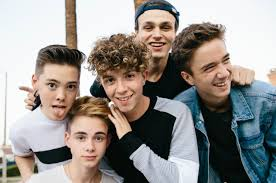
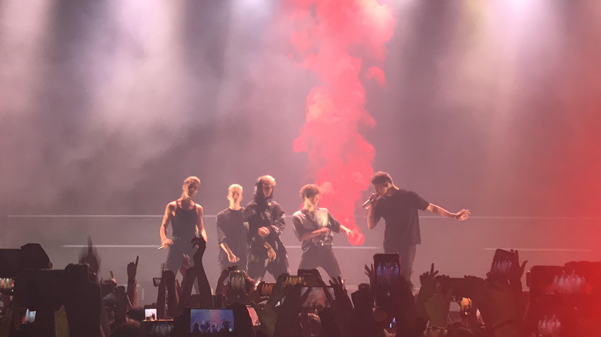

Het begin
De band kwam tot stand eind september van het jaar 2016. In het begin waren de vijf jongens allemaal solo-artiesten die elkaar ontmoetten en besloten om een band te vormen. Voor Why Don't We was het begin van hun carriere als een band niet heel stroef verlopen, wat wel normaal zou kunnen zijn geweest. Als de bandleden niet zelf al een fanbase hadden, was het begin niet soepel gelopen. Het liep zelfs zo goed dat de band in de eerste negen maanden van zijn bestaan al 1 miljoen volgers online had. De bandleden hadden zelfs in hun eerste jaar als band al een uitverkochte tour gegeven.
Samenwerking
Het starten van een band is gemakkelijk, iedereen kan het wel, maar om succelvol te worden, is het knap lastig. Om bekend te worden is het het beste om in het begin samen te gaan werken met andere al bekende mensen. Ook dit deed Why Don't We. Ze werkten samen met een hele bekende vlogger genaamd Logan Paul. Logan Paul heeft een paar muziekvideo's van Why Don't We opgenomen en geregisseerd. Ook heeft de vlogger een lied opgenomen met de band genaamd 'Help Me, Help You'. Het lied staat op het Youtube-kanaal van Logan Paul en heeft meer dan 276 miljoen weergaven. Natuurlijk heeft dit een enorme boost gegeven aan de bekendheid van Why Don't We. Naast samengewerkt te hebben met Logan Paul, heeft de band ook samengewerkt met onder andere Ed Sheeran. De band en Ed Sheeran hebben samen het lied 'Trust Fund Baby' geschreven.
Tour
De band bestaat vier jaar en toch hebben ze al redelijk veel tours achter de rug. In totaal hebben ze vier tours gedaan. Dit is een hele prestatie want ze hebben elk jaar dat ze bestaan een tour gedaan. Natuurlijk is het wel zo dat met de eerste tour, de 'Only The Beginning Tour', alleen in bepaalde plaatsen een optreden hebben gegeven. Dit met de reden dat in het begin Why Don't We niet overal in Amerika even bekend was. Doordat alle bandleden voor de start van de band al fans hadden, ging de populariteit van de band heel snel omhoog. Dit heeft natuurlijk ook een rol gespeeld, waardoor Why Don't We zo snel zo veel tours heeft kunnen doen.
Pauze
Begin 2020 nam Why Don't We een pauze van alle sociale media om te gaan werken aan een album. Inmiddels is het bekend gemaakt dat het album op 15 januari 2021 uitkomt. Er stond een grote druk op de band nadat ze in 2019 elke maand een nieuw nummer uitbrachten. Om deze reden verwacht een meerderheid van de fanbase een heel goed album. Why Don't We heeft zelf gezegd dat als je hun nummer 'Fallin' goed vond, dat je het nieuwe album heel leuk zal vinden. De timing van Why Don't We om een pauze te nemen en de quarantaine kon niet beter uitpakken. Door het verschrikkelijke coronavirus, werd iedereen gedwongen om in quarantaine te gaan. Gelukkig voor Why Don't We hadden zij voor het maken van het album meer dan genoeg tijd. Zelf hebben ze ook gezegd dat ondanks alle tijd die ze hebben 'gekregen' fijn was, maar dat ze touren heel erg missen. De pauze van Why Don't We is gestopt op 15 september 2020. Veel fans maakten grappen aan het begin van 2020 toen de pauze van de band werd aangekondigd. Namelijk, veel fans zeiden dat ze zouden worden als de band 'One Direction', omdat die band zei dat ze een pauze zouden namen van 18 maanden en inmiddels is het alweer 5 jaar geleden dat ze aankondigden dat ze een pauze namen. Maar gelukkig is Why Don't We gewoon weer terug op hun sociale media en niet begonnen met solo carrieres.